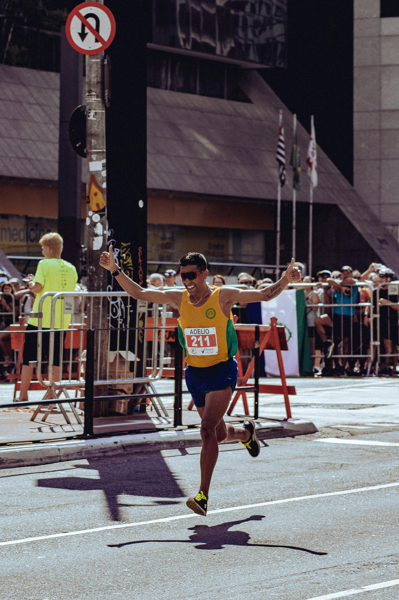
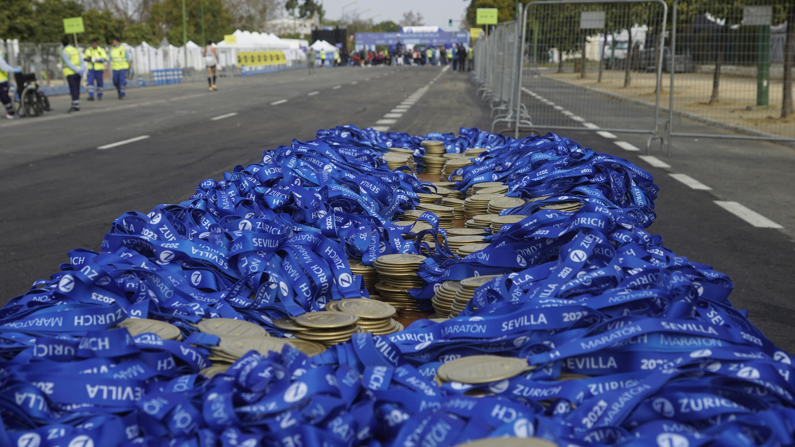
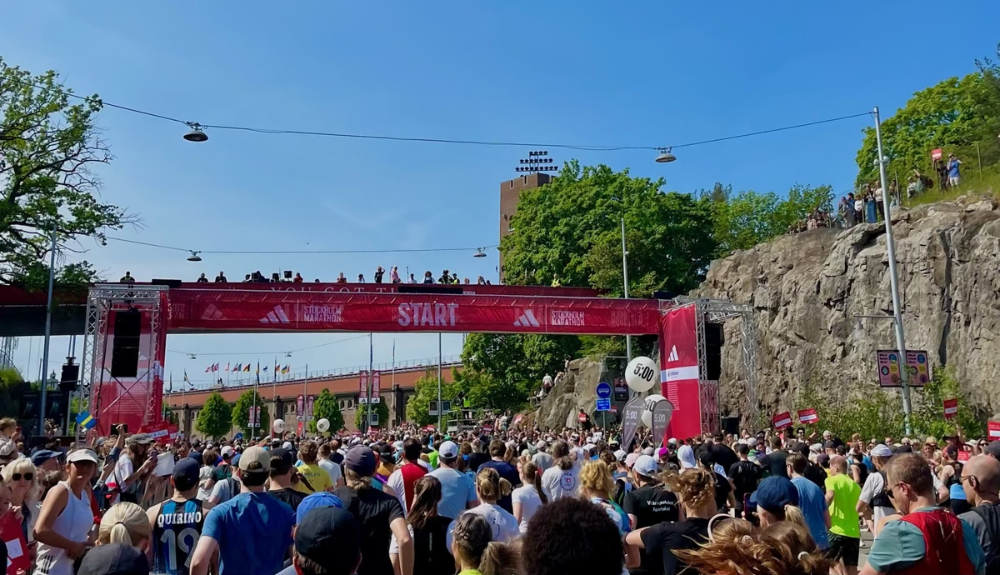

INSPIRATION OCH INFORMATION
Här hittar du motivation, tips och inspiration för din löpning. Löpning är mer än bara träning. Det är en paus från vardagen, en stund för sig själv där tankarna får vandra fritt och kroppen arbeta i sin egen takt. Du behöver inte vara snabb, stark eller erfaren. Det enda som krävs är att du börjar.
Varje steg du tar bygger något större, men oavsett anledning är löpning en resa där varje kilometer räknas.
Din resa börjar med ett steg. Ta det idag.